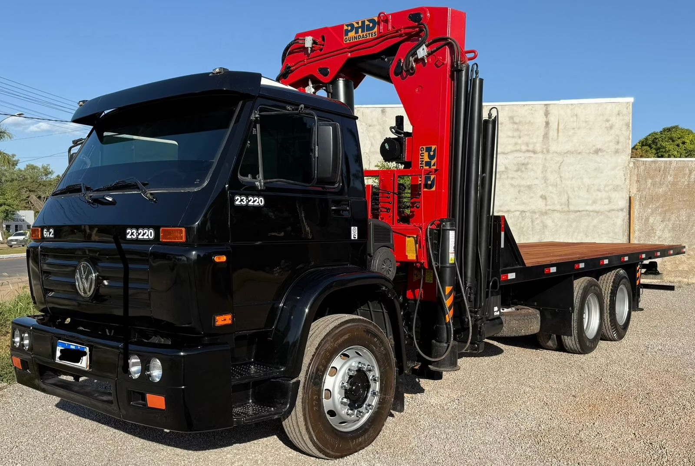
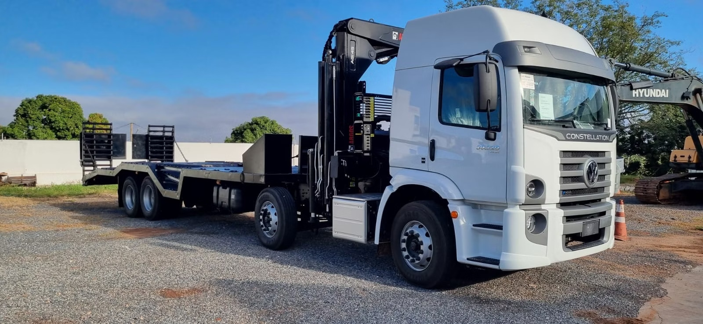

Segurança em foco
Tecnologia aplicada à operação de guindastes articulados. Operador fora da zona de risco, visão panorâmica e comandos precisos.

O desafio
Quando o operador precisa operar diretamente do equipamento, enfrenta múltiplos riscos: falta de visibilidade, risco de esmagamento, queda de carga e exposição a áreas perigosas.
Vantagens
O controle remoto industrial transforma a operação, permitindo que o operador controle o equipamento à distância com total visão da operação.
Aplicação
Empresas de mineração, construção pesada e siderurgia obtêm redução de riscos, proteção da equipe, menor número de afastamentos e máxima eficiência operacional com o controle remoto.
Solicitar Especificação
Nosso compromisso
Tecnologia aplicada à operação de equipamentos pesados — protegendo vidas e aumentando produtividade.